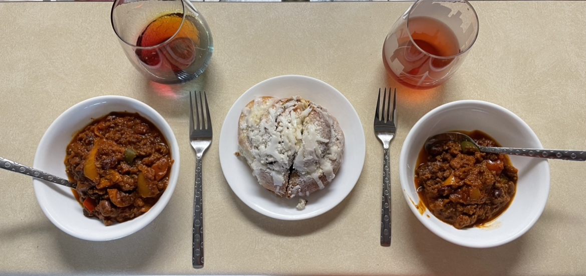
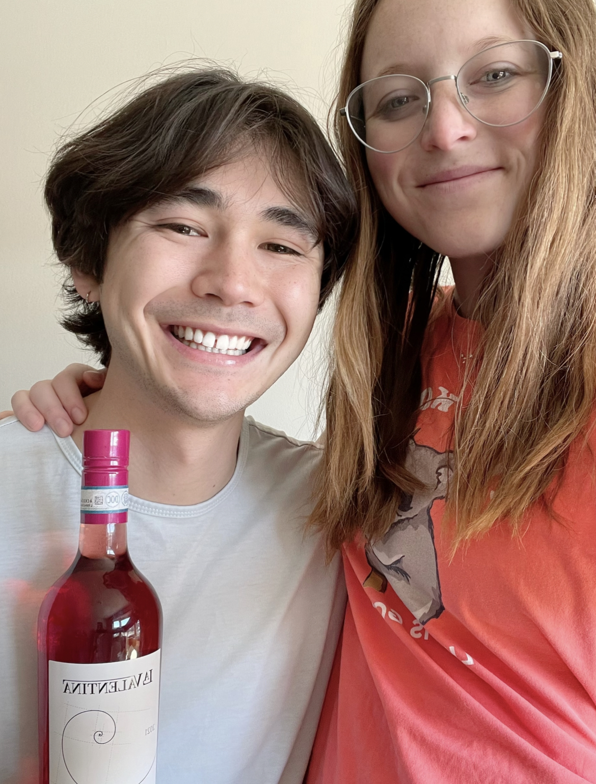

Cerasuolo d'Abruzzo
What is it?
Cerasuolo d'Abruzzo is a rosé wine made from the Montepulciano grape. The word "d'Abruzzo" means that the wine is "from the Abruzzo" region of Italy, and "Cerasuolo" is a word used for rosé wines; the literal translation of cerasuolo is "cherry-red" [2, 3]. This wine is a D.O.C. (Denominazione di origine controllata) wine, which means there are laws governing where it can be grown, its grape varieties, and wine styles [3]. This is also actually the newest D.O.C. wine of the Abruzzo region-- it was established as its own entity (separate from Montepulciano d'Abruzzo) in October 2010 [2]. The primary flavors of a wine made from Montepulciano grapes are red plum, blackberry, dried thyme, baking spices, and mesquite [1]. For the Cerasuolo d'Abruzzo style in particular, winemakers say that the additional primary flavors include cherry and small red berries [3].
We had this wine with chili and cinnamon rolls, since we were trying to complement the flavors of baking spices and mesquite in the wine with a smoky and cinnamon flair from the food. The chili and cinnamon roll combination was something neither of us had tried before. The cinnamon roll came from Gratitude Bakery in Lincoln. Our friends go there every week, and though we don't have quite the same track record, everything we've had from the bakery has been super delicious!
This pick was a little more random than our usual method. We'll often have a couple grapes or wines we want to try on a list and find something off the list. For this wine, we were very intrigued by the aesthetic; the label was fun for us as math people, and we liked the color of the wine as well. Once again, we found this wine at bin 105 in Lincoln. While we were there, we decided to try a couple wines on tap that can be purchased by the 1, 3, or 5 oz. pour. Sitting outside and drinking some fun wines on a beautiful spring day in Lincoln was the perfect way to end our week.
Molly's Rating and Tasting Notes
6.0. This wine has a nose of cherry and plum. The taste is somewhat reminiscent of baking spices. At times, I catch a glimpse of a fruit on the tongue, potentially blackberry or plum? All in all, I'd call this fine but not great by any means.
Ryan's Rating and Tasting Notes
6.4. On the nose I mostly get plum, cherry, and strawberry. However, these scents aren't very deep and intense, and they leave a little bit to be desired. Beneath the fruity smells, I also get vanilla pudding and gelatin. Upon tasting, there's not a whole lot going on. There is a little bit of plum, red licorice, pepper, and allspice. Every now and then I'll have a sip that is a little smoky, but only just. The mouth feel is very light and leaves the tongue a little dry. The after taste is a little acidic with some hints of alcohol, and it doesn't stay for very long. Overall, not a very exciting wine, but I do see potential and would try another one.
References
[1] Madeline Puckette and Justin Hammack. Wine Folly: The Master Guide. Avery - A Penguin Imprint, New York, NY, 2018.
[2] "Cerasuolo d'Abruzzo Wine." Wine Searcher. https://www.wine-searcher.com/regions-cerasuolo+d'abruzzo. Accessed: April 2023.
[3] "Cerasuolo d'Abruzzo." Italian Wine Central. https://italianwinecentral.com/denomination/cerasuolo-dabruzzo-doc/. Accessed: April 2023.